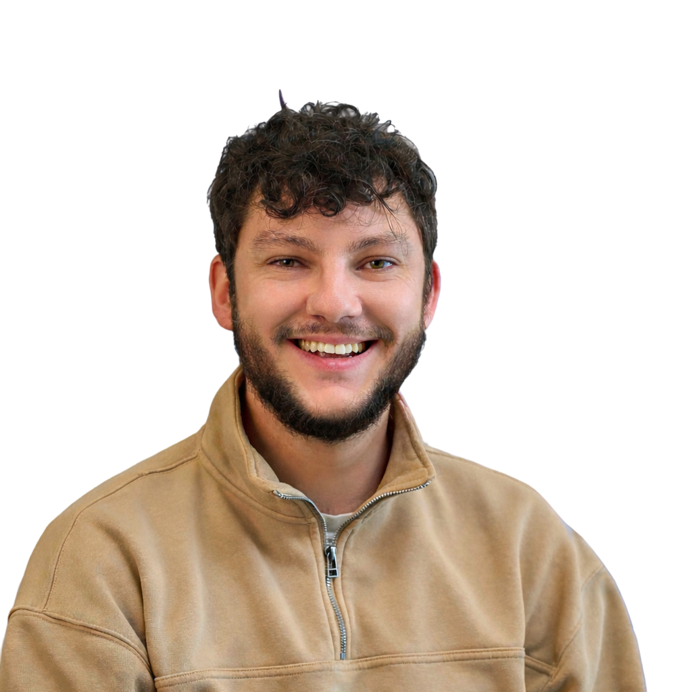

Systèmes
- Windows Server
- Linux
- Active Directory
- GPO
- Gestion des droits utilisateurs
Administrateur systèmes et réseaux, je développe mon parcours autour de l’exploitation, de la sécurisation et de la fiabilité des environnements SI. Mon objectif : intégrer une alternance ambitieuse pour poursuivre en mastère et monter en responsabilité sur des sujets infrastructure, réseau et cybersécurité.

Mon parcours s’appuie sur une expérience concrète en alternance, en lien avec l’administration systèmes et réseaux, la gestion d’environnements Windows/Linux, la supervision, la sauvegarde, le support et la sécurisation du SI.
Je cherche aujourd’hui une alternance qui me permette de franchir un cap : participer à des projets plus structurants, renforcer ma vision globale des infrastructures, et développer une expertise plus poussée en cybersécurité appliquée.
Au-delà de la technique, je valorise une approche rigoureuse : comprendre les usages, documenter, diagnostiquer, remettre en état, déployer proprement et sécuriser durablement.
Une base solide pour intervenir sur l’administration, l’exploitation et la sécurisation d’environnements d’entreprise, avec une montée en puissance naturelle vers des sujets plus avancés d’infrastructure et de cyberdéfense.
Le parcours montre une montée en responsabilités progressive sur des missions concrètes : support, exploitation, remise en état, mise en service, diagnostic, supervision et administration systèmes/réseaux.
Intervention sur l’administration systèmes et infrastructures, avec une logique de continuité opérationnelle, de stabilité des services et d’évolution progressive vers des enjeux plus structurants de sécurité et d’exploitation.
Support utilisateurs N1/N2, administration serveurs Windows/Linux, Active Directory, GPO, supervision, sauvegardes, gestion de parc, diagnostic de panne, remise en état des équipements et accompagnement à l’installation de nouveaux matériels.
Un parcours déjà cohérent avec la suite visée : renforcer une base technique solide par un mastère professionnalisant orienté management des infrastructures et cybersécurité des SI.
Bachelor Informatique — Administrateur Systèmes & Réseaux.
TSR Informatique — Technicien Systèmes & Réseaux, avec félicitations.
Bachelor Musique, avec félicitations. Parcours atypique, révélateur d’autonomie et d’engagement.
Baccalauréat STI2D.
Je recherche une alternance où je peux contribuer rapidement, apprendre dans un cadre exigeant, et évoluer sur des sujets d’infrastructure, de réseau et de cybersécurité avec un vrai niveau d’attente technique.
Je souhaite rejoindre une structure où la technique a du sens : exploitation, sécurisation, maintien en condition opérationnelle, projets d’évolution et accompagnement des usages.
Je suis particulièrement intéressé par les environnements où l’on attend de la rigueur, de la fiabilité, de la curiosité technique et une vraie progression.
Profil administrateur / technicien systèmes & réseaux, avec intérêt fort pour les sujets d’infrastructure sécurisée et de cybersécurité opérationnelle.